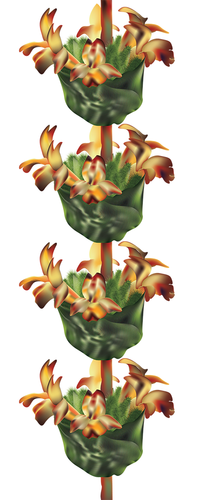

Endemic & Endangered Flora
of Pendataktylos Mountains
Brassica Hilarionis
Delphinium Caseyi
Onosma Caespitosa
Salvia Veneris
Sideritis Cypria
Silenopis Antiphonitis
Teucrium Kyreniae
S. cilicica Boiss. var. cypria (Post) Lindberg f.
LAMIACEAE
Summary: Subshrub up to 60 cm high. Young shoots tetragonal, densely white tomentose at base. Leaves densely hairy, obovate or oblanceolate. Flowers bright yellow, tinged brown. Endemic to Cyprus; surveyed at 7 locations along the Pentadaktylos range (total number about 260 plants): Fterycha, Karmi, Trypa Vouno, Pano Dikomo, Keryneia cliffs, Chaleuga and southeast of Boufavento; in fissures of limestone cliffs, at altitude 300-600 m (older collections up to 900 m). Since it grows on rocky areas and often on cliffs which are difficult to access, it is most likely that its population is larger than that surveyed during this project. In fact, in the past it has been collected from a number of sites which may be different than those surveyed during 2004-2005. It needs further investigation to ascertain the exact population size and extent. The known subpopulations are threatened by road widening, quarrying and fires.

IUCN: Endangered